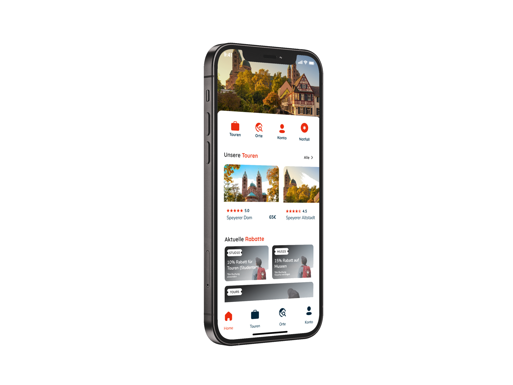

Individual Tour Guides
Experience & Assistance- Tour suggestions tailored to specific impairments
- e.g. "Step-free through Speyer"
- Matching with trained, bookable companions
- Information about sights in simplified language

A digital concept & app prototype for inclusive city tourism: individual tour guides, low-barrier routes, and personal assistance so that everyone can experience Speyer in a self-determined way.
"Accessibility everywhere, because freedom and independence are not a luxury." ← Back to Work at DHBWA world of tourism where no one stands before a barrier.
Travelling with mobility, sensory, or cognitive impairments is severely complicated in many tourist cities. Historic old towns with cobblestones, steep alleys, inaccessible sights, and a lack of support prevent inclusion and independence.
Using Speyer as an example (with its UNESCO World Heritage cathedral, the Jewish quarter, and the Rhine promenade), the task was to develop a digital system of app and communication campaign that offers people with reduced mobility personalized support: from navigation to individually tailored experience tours with assistance.
Developing the texts and brand message, understandable, empathetic, and in accessible, plain language.
Building the campaign along the Lasswell formula: Who says what in which channel to whom, with what effect?
Planning distribution via app, website, social media, accessible audio guides, and print media.
In the Voyama team I was responsible for Content & Marketing. My focus was on translating the idea of accessible travel into a clear, credible language and positioning the brand so that it comes across as technologically competent, socially relevant, and humanly approachable.
To achieve this, I built the communication strategy along the Lasswell formula and defined the appropriate channels, from the app through social media to accessible print and audio formats in simplified language.
The guiding principle of my communication: „Accessibility everywhere, because freedom and independence are not a luxury.“ The message should convey trust, accessibility, and competence, and encourage independent travel.
A clear, trustworthy UI in signal red & navy: large surfaces, calm typography, and easily readable contrasts, consistently designed for accessibility.


Screens serve as a prototype for the visual representation of the app concept.
From tour guides, route planning, and community emerges a system that not only navigates, but accompanies: it combines digital assistance with genuine, physical accessibility and turns a challenging city trip into an independent experience with more security, more freedom, and more cultural participation.
What I take away from this project.
Voyama taught me how to think about design beyond aesthetics — as a tool for social participation. Developing content and a communication strategy for a product that addresses real barriers sharpened my sense for empathetic, accessible language and gave me a deeper understanding of inclusive design thinking.
Working in a team on a concept with genuine social relevance showed me how much impact a clear brand message can have when it is rooted in real needs rather than assumptions.